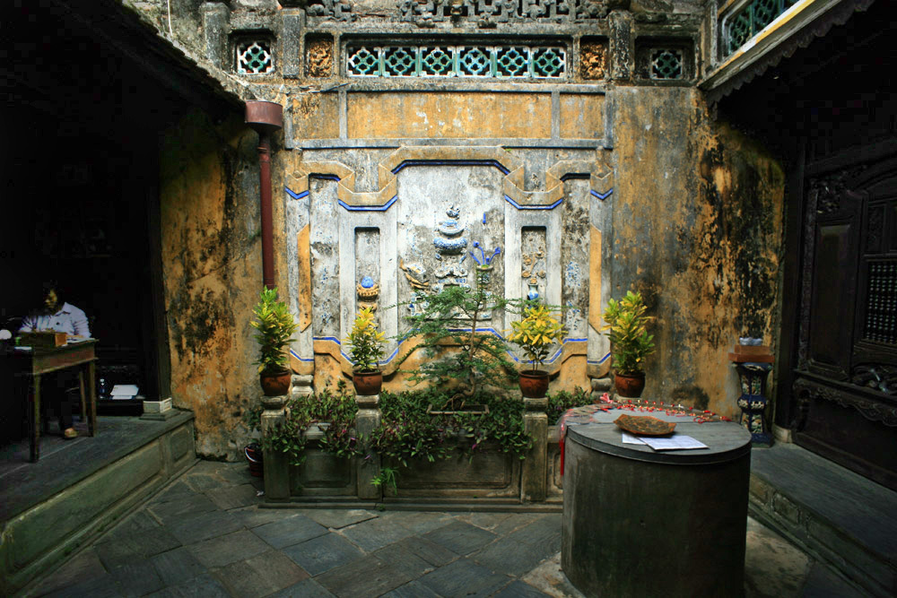

Phố cổ Hội An
Hội An là một thành phố trực thuộc tỉnh Quảng Nam, Việt Nam. Phố cổ Hội An từng là một thương cảng quốc tế sầm uất, gồm những di sản kiến trúc đã có từ hàng trăm năm trước, được UNESCO công nhận là di sản văn hóa thế giới từ năm 1999.
PLACES TO CHECK OUT
Chùa Cầu
.jpg)
Chiếc cầu làm bằng gỗ trên những trụ cầu bằng gạch đá, dài khoảng 18 m, có mái che, vắt cong qua lạch nước chảy ra sông Thu Bồn giáp ranh giữa hai đường Nguyễn Thị Minh Khai và Trần Phú.
Chợ đêm Hội An
Chợ đêm Hội An là điểm vui chơi quen thuộc với nhiều người dân và du khách khi đến với Quảng Nam. Tại khu chợ này, bạn sẽ được hòa mình vào không gian mua sắm sầm uất, thưởng thức nhiều món ăn mang đậm màu sắc vùng miền. Đây là một điểm đến đặc trưng của văn hóa du lịch tại phố cổ.
Nhà cổ Tấn Ký
Nhà cổ Tấn Ký có từ lâu đời, là nơi sinh sống của 7 thế hệ nhà họ Lê. Ngôi nhà cổ đẹp nhất Hội An này là địa điểm check-in “hot” nhất phố Hội, luôn thu hút hàng nghìn khách du lịch đến chiêm ngưỡng kiến trúc, văn hóa và nghe bài thuyết minh về nhà cổ Tấn Ký đầy ấn tượng.
MUST-TRY DISHES
Cao lầu Hội An

Cao lầu Hội An là món ăn đặc sản từ xa xưa, người dân Quảng Nam đã có câu ca dao: “Ai qua phố cổ Hội An Ghé thăm Phúc Kiến mà ăn cao lầu”
Mỳ Quảng Hội An
Nếu người Hà Nội tự hào vì món phở bò thơm ngon, người dân Huế có món bún bò đặc sắc thì người xứ Quảng lại tự hào về mì Quảng, một món ăn đặc sản Hội An. Món này từng khiến bao thực khách phải lưu luyến mãi hương vị thơm ngon đặc trưng.
Bánh đập hến xào
Bánh đập xúc hến xào Hội An là một trong những món ăn dân giã được nhiều du khách yêu mến nhờ hương vị hấp dẫn, đậm đà và mang màu sắc đặc trưng của phố cổ. Món ăn quyến rũ nhờ hương vị đặc trưng của loại hến vùng Cẩm Nam mà bạn sẽ không thể cảm nhận được ở bất kì một nơi nào khác ngoài Hội An.